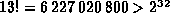
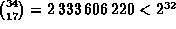
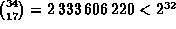
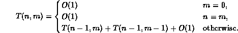
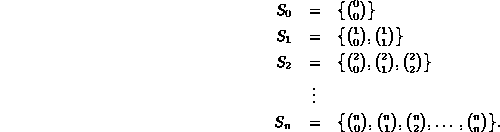
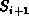
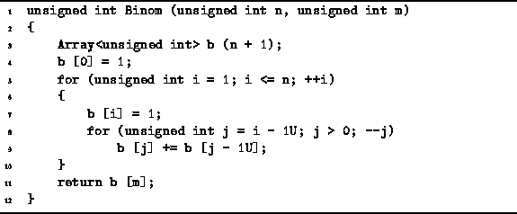

Data Structures and Algorithms
with Object-Oriented Design Patterns in C++
Data Structures and Algorithms
with Object-Oriented Design Patterns in C++Consider the problem of computing the binomial coefficient
given non-negative integers n and m (see Theorem  ).
).
The problem with implementing directly Equation
is that the factorials grow quickly with increasing n and m.
For example, .
Therefore, it is not possible to represent n! for  using unsigned 32-bit integers.
Nevertheless it is possible
to represent the binomial coefficients up to n=34
without overflowing.
For example, .
using unsigned 32-bit integers.
Nevertheless it is possible
to represent the binomial coefficients up to n=34
without overflowing.
For example, .
Consider the following recursive definition of the binomial coefficients:
This formulation does not require the computation of factorials. In fact, the only computation needed is addition.
If we implement Equation directly as a recursive function,
we get a routine whose running time is given by

which is very similar to Equation .
In fact, we can show that  which (by Equation ) is not a very good running time at all!
Again the problem with the direct recursive implementation is that
it does far more work than is needed because
it solves the same subproblem many times.
which (by Equation ) is not a very good running time at all!
Again the problem with the direct recursive implementation is that
it does far more work than is needed because
it solves the same subproblem many times.
An alternative to the top-down recursive implementation is to do the calculation from the bottom up. In order to do this we compute the series of sequences

Notice that we can compute  from the information contained
in  simply by using Equation .
Table shows the sequence in tabular form--the
simply by using Equation .
Table shows the sequence in tabular form--the  row of the table corresponds the sequence
row of the table corresponds the sequence  .
This tabular representation of the binomial coefficients is
known as Pascal's triangle .
.
This tabular representation of the binomial coefficients is
known as Pascal's triangle .
| n | ||||||||
| 0 | 1 | |||||||
| 1 | 1 | 1 | ||||||
| 2 | 1 | 2 | 1 | |||||
| 3 | 1 | 3 | 3 | 1 | ||||
| 4 | 1 | 4 | 6 | 4 | 1 | |||
| 5 | 1 | 5 | 10 | 10 | 5 | 1 | ||
| 6 | 1 | 6 | 15 | 20 | 15 | 6 | 1 | |
| 7 | 1 | 7 | 21 | 35 | 35 | 21 | 7 | 1 |
Program defines the function Binom
which takes two integer arguments n and m
and computes the binomial coefficient
by computing Pascal's triangle.
According to Equation ,
each subsequent row depends only on the preceding row--it is only necessary to keep track of one row of data.
The implementation shown uses an array of length n
to represent a row of Pascal's triangle.
Consequently, instead of a table of size  ,
the algorithm gets by with O(n) space.
The implementation has been coded carefully
so that the computation can be done in place.
I.e., the elements of are computed
in reverse so that they can be written over the elements of
,
the algorithm gets by with O(n) space.
The implementation has been coded carefully
so that the computation can be done in place.
I.e., the elements of are computed
in reverse so that they can be written over the elements of  that are no longer needed.
that are no longer needed.

Program: Dynamic Programming Example--Computing Binomial Coefficients
The worst-case running time of the Binom
routine given in Program is clearly  .
.
 Copyright © 1997 by Bruno R. Preiss, P.Eng. All rights reserved.
Copyright © 1997 by Bruno R. Preiss, P.Eng. All rights reserved.